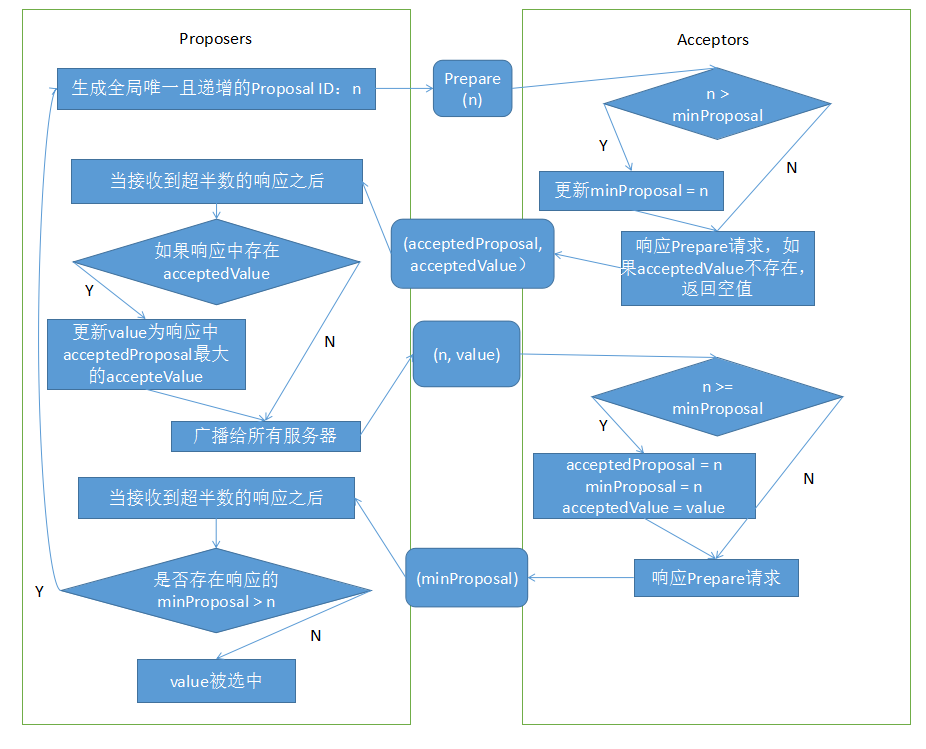
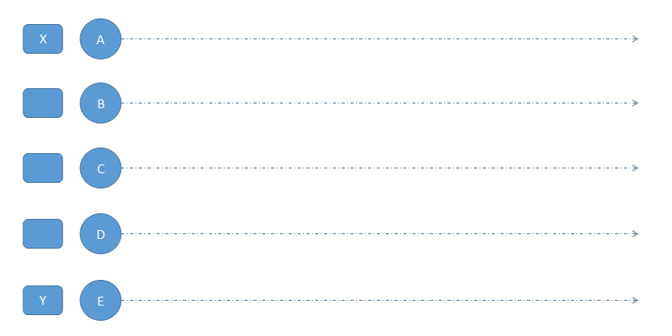
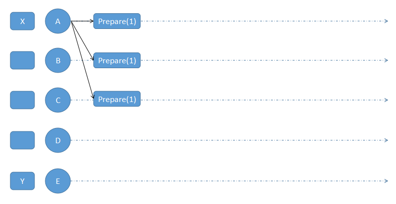
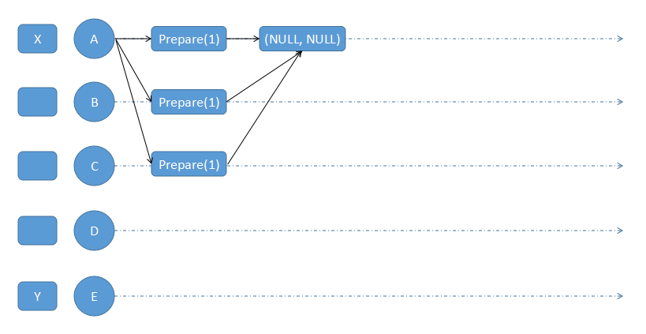
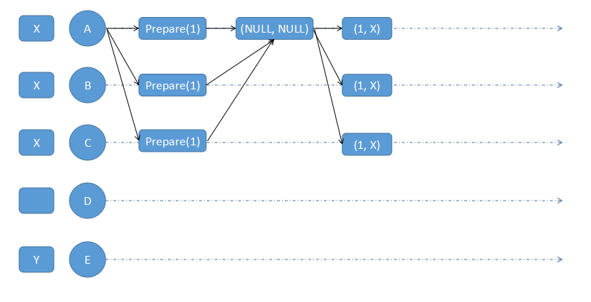
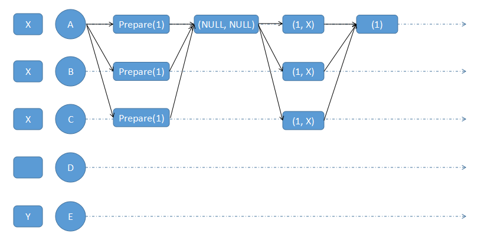
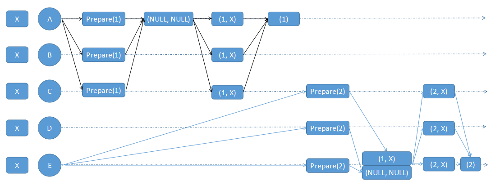

前言
Paxos 一致性协议可以说是一致性协议研究的起点，也以难以理解闻名。其实协议本身并没有多难理解，它的难理解性主要体现在：为何如此设计协议以及如何证明其正确性。本文尝试通过流程图来说明协议的内容以及基本应用过程，不涉及如何证明其正确性。
基本概念
Paxos 可以分为两种：
- Single-Decree Paxos：决策单个 Value
- Multi-Paxos：连续决策多个 Value，并且保证每个节点上的顺序完全一致，多 Paxos 往往是同事运行多个单 Paxos 协议共同执行的结果。
本文只关注单 Paxos 的原理，理解了单 Paxos，多 Paxos 也就不难理解了。
Paxos 协议中的三种角色
- 倡议者（Proposer）：倡议者可以提出提议（数值或者操作命令）以供投票表决
- 接受者（Acceptor）：接受者可以对倡议者提出的提议进行投票表决，提议有超半数的接受者投票即被选中
- 学习者（Learner）：学习者无投票权，只是从接受者那里获知哪个提议被选中
在协议中，每个节点可以同时扮演以上多个角色。
Paxos 的特点
- 一个或多个节点可以提出提议
- 系统必须针对所有提案中的某个提案达成一致（超过半数的接受者选中）
- 最多只能对一个确定的提议达成一致
- 只要超半数的节点存活且可互相通信，整个系统一定能达成一致状态，即选择一个确定的提议
协议图示

通过上面的流程，如果有多个节点同时提出各自的提议，Paxos 就可以保证从中选出一个唯一确定的值，保证分布式系统的一致性。
实例
下面我们通过例子来理解 Paxos 的实际应用过程。
假设现在有五个节点的分布式系统，此时 A 节点打算提议 X 值，E 节点打算提议 Y 值，其他节点没有提议。

假设现在 A 节点广播它的提议（也会发送给自己），由于网络延迟的原因，只有 A，B，C 节点收到了。注意即使 A，E 节点的提议同时到达某个节点，它也必然有个先后处理的顺序，这里的“同时”不是真正意义上的“同时”。

A，B，C接收提议之后，由于这是第一个它们接收到的提议，acceptedProposal 和 acceptedValue 都为空。

由于 A 节点已经收到超半数的节点响应，且返回的 acceptedValue 都为空，也就是说它可以用 X 作为提议的值来发生 Accept 请求，A，B，C接收到请求之后，将 acceptedValue 更新为 X。

A，B，C 会发生 minProposal 给 A，A 检查发现没有大于 1 的 minProposal 出现，此时 X 已经被选中。等等，我们是不是忘了D，E节点？它们的 acceptedValue 并不是 X，系统还处于不一致状态。至此，Paxos 过程还没有结束，我们继续看。

此时 E 节点选择 Proposal ID 为 2 发送 Prepare 请求，结果就和上面不一样了，因为 C 节点已经接受了 A 节点的提议，它不会三心二意，所以就告诉 E 节点它的选择，E 节点也很绅士，既然 C 选择了 A 的提议，那我也选它吧。于是，E 发起 Accept 请求，使用 X 作为提议值，至此，整个分布式系统达成了一致，大家都选择了 X。

上面是 Paxos 的一个简单应用过程，其他复杂的场景也可以根据流程图慢慢推导，这里只是抛砖引玉。